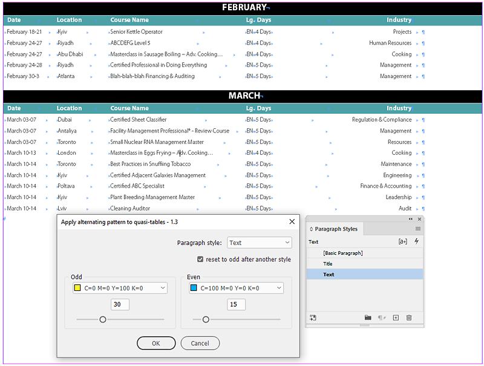
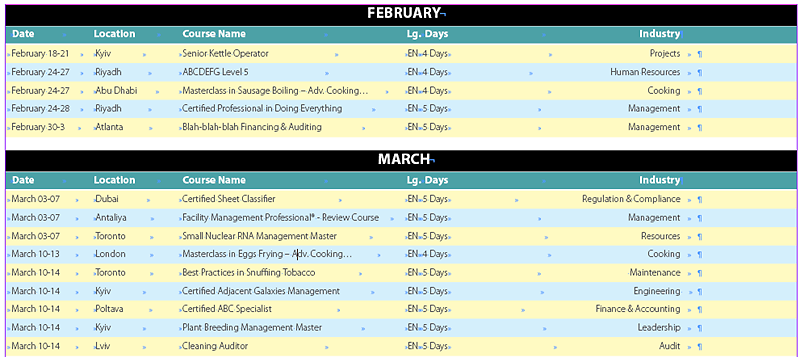
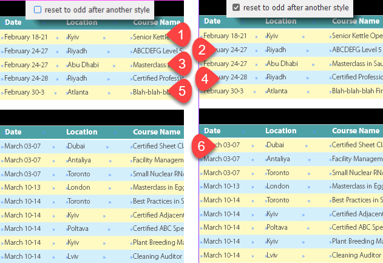
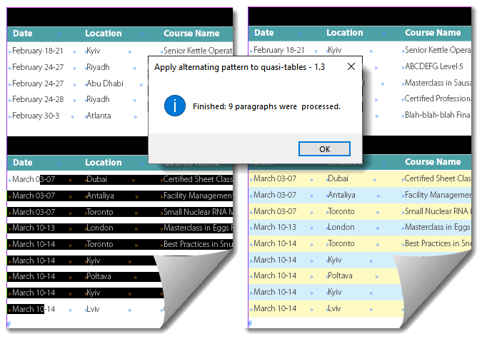

Apply alternating pattern to quasi-tables
Script for InDesign. Written by Kasyan. For displaying swatches in the dialog box, I used (and modified a little) the See Your Swatches in ScriptUI function by Marc Autret.
By quasi-table, I mean a piece of text that only looks like a table but, in reality, is not. The table appearance is imitated by tabs defined in the paragraph style. Here’s an example of such a quasi-table that you can download and examine how it’s made.
The advantage of this approach is that such tables work much faster. It’s crucial, for example, for creating hyperlinks on a mass scale (in thousands) by script like here.
How it works
Select a text frame and run the script. A dialog box appears.
Here, in my test file, the rows are formatted with the Text paragraph style so I select it in the ‘Paragraph style’ dropdown list. For ‘Odd’ rows, I select a swatch and tint value; for ‘Even’, I chose another one.

After running the script, I get alternating pattern like so:

The script applies the selected colors via paragraph shading to the lines in the quasi-table. To control the top and bottom offset in my test document, I defined them in the Text paragraph style with a dummy color set to None.
Reset to odd after another style check box.
If this check box is on, and a different paragraph style is met in the text flow than selected in the Paragraph style dropdown list, the pattern is reset starting from the Odd color; if it is off, it continues with the Even color. See the screenshot below. After line five the text flow is interrupted by the Title paragraph style. If the check box is off (left), the next — Even — swatch is applied; if on (right), it restarts with Odd.

If you select a text frame or place the cursor into the text, the whole story will be processed. But if you select some text, only the selected text will be processed.

You can Undo-Redo the script.
Note on some rare occasions — for me, it happened only once — the script may fail to collect all the swatches defined in the document. In this case, the swatches will not be displayed so you will see only their names. This preventive measure was taken to pre-empt the script from throwing an error and stopping.
If you found my scripts useful and want me to develop more free scripts, consider supporting me by donating via PayPal directly to my e-mail: askoldich [at] yahoo [dot] com. (Due to PayPal's restrictions for Ukraine, I can't have a Donate button on my site.)
Here are the script and the before and after test files with the pseudo-table on the screenshot above.